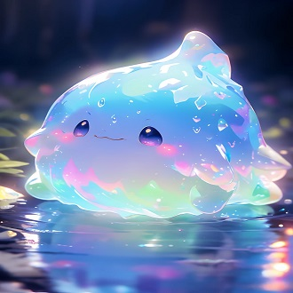

-
Aurelio
Descrição
Aqui temos o heroi, ele só não sabe disso, Aurelio é um cara extremamente inteligente porem arrogante, que faz de tudo para proteger a si mesmo e os seus, sonha com o fim da guerra, mas aproveita o quanto pode para lucrar com ela. Um hacker habilidoso, que foi criado em meio a uma civilização caotica. Ele aceitou lutar contra o imperio Kanx, por ser alguem que querendo ou não vive no universo, e ele não vai deixar ferirem quem é importante para ele.
-
Cassian
Descrição
Cassian é uma mulher misteriosa, sobrevivente de um massacre em seu planeta, pertence a uma raça extremamente pacifica, porem que possuem habilidades extremamente poderosas, parceira de Aurelio, apesar de misteriosa ela possui um bom coração, mesmo que ela não possua um, ela acompanha Aurelio em suas aventuras, a anos pois ela sabe que apesar de um idiota, ele é uma boa pessoa. Cassian possui poderes empaticos, e pode manipular sentimentos de outras pessoas, alem de poder sobreviver em ambientes aquaticos, e controlar e moldar agua com certa limitação, podendo alterar a temperatura e forma da mesma.
-
Fluffy " não confiavel"
Descrição
Um ser fofinho feito de energia, e algodão-doce, que serve de mascote para a dupla de herois. Foi encontrado em um momento muito conveniente, e nada suspeito, e as vezes faz coisas suspeitas, mas todos revelam isso por conta de tratarem ele como uma criança, apesar de não falar, ele se comunica telepaticamente, e tem poderes de mover objetos, alem de influenciar pessoas sem que elas percebam. Não se engane por sua fofura, é apenas um disfarce.
-
SparkHouse
Descrição
Nave que serve como casa, da dupla de herois. É uma nave antiga que foi herdada dos avós, e aprimorada por Aurelio ao longo do tempo, apesar de ser antiga, Aurelio tranformou ela em uma verdadeira fortaleza de guerra. Mas com a ajuda de Cassian, eles tranformaam essa nave de guerra em um verdadeiro lar. Mais uma vez, não confie em Fluffy, ele pode estar em qualquer lugar.
-
Exercito Kanx

Descrição
Exercito da Rainha Kanx, seres tecnorganicos, que tem como os seus unicos objetivos seguir as ordens de sua rainha, e consumir absolutamente tudo pela sua frente.
-
Rainha Kanx
Descrição
O ser supremo, conquistador de galaxyas e dimensões, a ultima de uma raça que foi dizimada, e após isso decidiu dominar completamente a galaxia para que o mesmo não aconteça. Porem o poder a corrompeu e ela se tornou um ser asqueroso, cada vez menos organico e cega por poder.